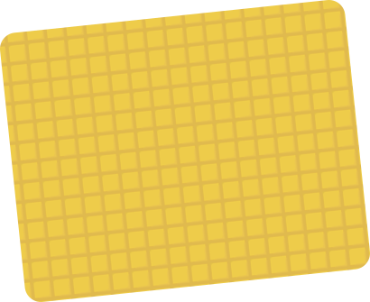
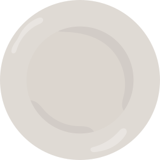
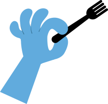
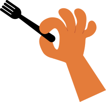

JUGADOR 1
0 pts
JUGADOR 2
0 pts


Duelo
de bocados
¡Compitan entre dos personas en el mismo teclado!
Presionen su tecla para atrapar alimentos saludables (+10). Dejen pasar jugos, refrescos y dulces (−5): son para consumir poco y con poca frecuencia.
¡Tienen 30 segundos!
Jugador 1: Tab | Jugador 2: Enter00:30
Elige fruta entera, verduras y agua simple con más frecuencia. Los jugos, refrescos y dulces son para consumir en pequeñas cantidades y con poca frecuencia.